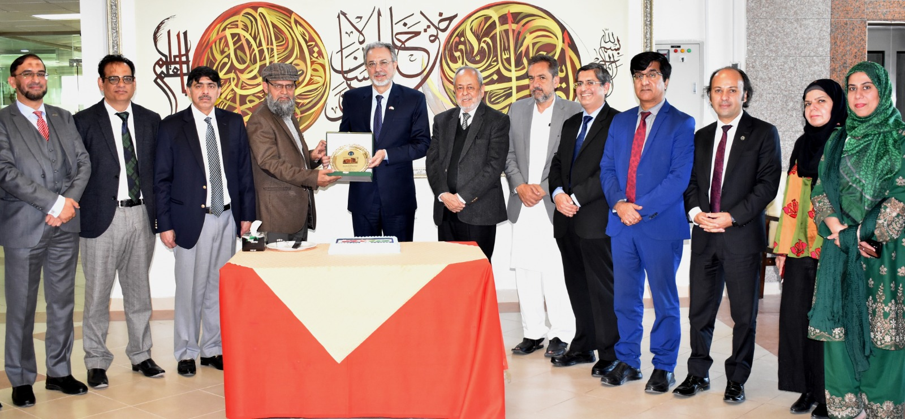

About UsCOMSATS University Islamabad (CUI) started its journey in 1998, and established its first campus at Islamabad in April 1998. In August 2000, in recognition of CUI's achievements, the Federal Government granted it the status of a Degree Awarding Institute (DAI) through promulgation of its charter. |
 |
VisionThe COMSATS University Islamabad envisions assuming a truly national character for itself in the years to come. It envisions having presence in all provinces of the country. It sees for itself a position among the top five (5) universities in the country; among top 100 universities in the developing countries and top 300, 200, 100 universities in the world respectively in the 5, 10 and 15-years’ time horizon. |